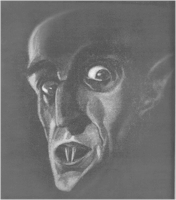

Contents | Features | Reviews | News | Archives | Store

Contents | Features | Reviews | News | Archives | Store
|  | Nosferatu Arrives in America by Gregory Avery |
Florence
Stoker, living in London in the early 1920s, was no stranger to adversity or the
public eye. Born into a poor Irish family, she would become a woman of
surpassing beauty, described by some as having the looks of a
"warrior-saint", and would attract the attentions of George du Maurier
(who would later write Trilby), Oscar Wilde (who would base the character
of Cecily Cardew in The Importance of Being Earnest on her) and Walter
Frederick Osbourne (whose portrait of her would be exhibited at the Royal
Academy of Arts in 1895). She would meet Bram Stoker when she was 19, and they
would marry in 1878. Never a wealthy couple, they would remain together for 34
years. Florence tended her husband during his last difficult years, prior to his
death in 1912, when he was beset by the effects of a stroke, a degenerative
kidney disorder, and, according to one biographer, tertiary syphilis. After the
birth of their son, Noel, in 1879, the Stokers' relationship was perceived as
being a fairly chaste one.
Women
as progenitors of evil, though, figured in Bram Stoker's literary output, not
only in Dracula -- the Count's three vampire brides; the transformation
of Lucy Westenra into the "Lady in White", who lures children to their
doom -- but also in two other novels: The Jewel of Seven Stars and The
Lair of the White Worm. His short story, The Dualitists,
concerns two very young boys who join forces to wreak a mind-boggling
campaign of death and destruction upon their neighborhood, all told by Stoker,
not in a moralizing style, but in a darkly humorous one.
By
1922, the woman who had once entertained Wilde (who, prior to Stoker, had asked
for her hand in marriage), Henry Irving and John Singer Sargent in her weekly
salons at-home was living in fading gentility, trying to make ends meet on the
meager royalties being generated by Dracula, the only one of her
husband's seventeen works still in print.
When,
one month after its premiere, she learned about the existence of Nosferatu,
she promptly swung into action with a force that was considerable. She applied
to the British Incorporated Society of Authors for assistance in protecting the
possible theft of her husband's work. Three years worth of litigation and
appeals followed, resulting in the German courts ruling that Mrs. Stoker's
rights had been infringed upon, and that the film Nosferatu should be
destroyed.
By
that time, Prana-Films had already faltered into receivership, their finances a
shambles only three months after the premiere of their first production. The
film proceeded to pass into other hands by 1924, when a version was shown in
Paris with the characters' names changed to their counterparts in Dracula.
When the German court ruling came down, all prints of Nosferatu, negative
and positive, had disappeared.
Florence
Stoker wasn't deterred. She shut down an attempt to show the film at London's
privately-run Film Society, in 1925. After a second attempt, four years later,
she demanded, and got, the right to seize ownership of the print, over the
protests of Ivor Montagu, who ran the Film Society and asked that he at least be
allowed to preserve the film even if he couldn't show it. The sole U.K. print
was consigned to the flames in April 1929.
 Nosferatu
then turned up, two months later, in New York City, where it was shown at
Greenwich Village's Film Guild Cinema, the "house of shadow silence",
which had a beautifully-designed auditorium by Frederick Kiesler with a screen
whose curtains contracted, the way an iris in a camera's lens would, from over
the screen. (The theater would later become the highly-regarded Eighth Street
Playhouse, where The Rocky Horror Picture Show began its regular midnight
showings.) With one sole exception, the majority of critics were unimpressed
with the film, the Times’ film critic Mordaunt Hall complaining that
Count Orlok's movements "are too deliberate to be lifelike". (To which
one immediately responds, well, yes, of course;
he's a vampire.) (For a scathing, but accurate, summation of Hall's
contributions to film criticism, see Barry Paris' excellent 1989 biography of
Louise Brooks.)
Nosferatu
then turned up, two months later, in New York City, where it was shown at
Greenwich Village's Film Guild Cinema, the "house of shadow silence",
which had a beautifully-designed auditorium by Frederick Kiesler with a screen
whose curtains contracted, the way an iris in a camera's lens would, from over
the screen. (The theater would later become the highly-regarded Eighth Street
Playhouse, where The Rocky Horror Picture Show began its regular midnight
showings.) With one sole exception, the majority of critics were unimpressed
with the film, the Times’ film critic Mordaunt Hall complaining that
Count Orlok's movements "are too deliberate to be lifelike". (To which
one immediately responds, well, yes, of course;
he's a vampire.) (For a scathing, but accurate, summation of Hall's
contributions to film criticism, see Barry Paris' excellent 1989 biography of
Louise Brooks.)
While
Florence Stoker was busy trying to stamp out the pesky nuisance that Murnau's
vampire had become for her, interest arose in putting Bram Stoker's vampire on
the stage. In 1924, Hamilton Deane approached Mrs. Stoker about doing a stage
adaptation of "Dracula", for which he would write the adaptation and
play the role of the Count himself. Mrs. Stoker gave her permission; Deane ended
up playing the part of Van Helsing in the production when it opened in 1925,
with Raymond Huntley, wearing swept-back hair effectively streaked with white,
sinuous Mephistophelean eyebrows, and with a wonderfully glaring, hawk-nosed
face, essaying the role of the Count.
After
a successful two-year tour of the provinces, the play opened in London and was
seen by the publisher and producer Horace Liveright. The show was playing to
packed houses, and nurses were in attendance to administer smelling salts to
those audience members who became too overwhelmed by the thrills. (And audiences
availed themselves of this service.)
Liveright
saw the potential for a New York run of the show, but contacted London-based
American writer John L. Balderston about putting it into more presentable shape.
For one thing, the dialogue, by most accounts, was awful. (In Hollywood
Gothic, a history of Dracula's journey through the 20th century,
author David J. Skal quotes one instance in the Deane play where the
Count apologizes to a housemaid whom he has just startled, saying, "I have
sorrow if I have given to you the alarm -- perhaps my footfall sounds not so
heavy as that of your English ploughman." Balderston revised this to,
"Forgive me. My footfall is not heavy, and your rugs are soft.")
Balderston made the necessary adjustments, and Dracula opened on
Broadway, with a 46-year-old expatriate Hungarian actor named Bela Lugosi in the
title role, in October, 1927. The work must have been fast, since Liveright had
first seen Deane's London production in February of that same year. And with the
New York opening, success repeated itself in droves.
Now,
there were many people interested in maintaining their stakes in Dracula,
but none more so than Florence Stoker. Despite two stage adaptations running on
either side of the Atlantic, and sales of the novel on the upswing, the fees and
percentages she was supposed to have been receiving were not all that
forthcoming. By 1929, her eyesight was failing to the point where she was
finding it difficult to read or write. And, then, Hollywood came calling.
Carl
Laemmle, Sr., the sixty-two-year-old founder and head of Universal Studios --
or, as he was called, sometimes grudgingly, by his employees, "Uncle
Carl" -- was not all that enthused about making a film of Dracula.
He claimed the only reason he bought the thing was to keep "Junior"
happy. "Junior" was Laemmle's son, Julius, who, in a move that could
have come straight out of one of Murnau's own films, gave up his birth name and
allowed himself to become Carl Laemmle, Jr., prior to his assuming control of
the studio, as production chief, on his twenty-first birthday.
With
audiences flocking to see the "sensational vampire mystery play",
Florence Stoker set the price for the movie rights to the novel Dracula
at $35,000, stock market crash or no. And the novel rights had to purchased
before anything else could be done. Mrs. Stoker had already been appalled over
seeing a fictitious notice in a trade paper claiming that the Dracula rights
had been sold, for a film version to star Conrad Veidt, for £45,000 -- more
money than she had ever seen in her life. After a great deal of scuffling,
Universal finally paid Mrs. Stoker's asking price, so that the property would
not fall into the hands of one of several rival studios who were angling for it.
And
it was at about this time that Nosferatu made its appearance in the U.S.
After the New York showings, it screened in Detroit, but before it could make
any further headway into the country, Universal interceded and bought the sole
circulating print for a virtual pittance ($400) and had it shipped, by airmail,
to Hollywood posthaste. It was assumed that, there, it would meet the same fate
as the U.K. print, once it came under the exposure to the Southern California
sunlight.
Or
maybe not. In Hollywood Gothic, David J. Skal became one of the first
researchers to compare the 1931 English-language Dracula, directed by Tod
Browning and with Bela Lugosi (after a hard-fought campaign) reprising his
portrayal of the Count, and the simultaneously-made Spanish-language version,
which used the same sets that the Browning film was being made on (Browning's
crew would work during the day; the Spanish Dracula crew coming in to
work at night). Side-by-side photographs of scenes from the Spanish Dracula,
which was directed by George Melford, who had earlier directed Valentino in The
Sheik, and featured stage actor Carlos Villarias as the Count, and Murnau's Nosferatu
show that, if they were not awfully similar in comparison, they most certainly
seem to have been made using some of the same inspiration. (The Spanish Dracula
completed production ahead of schedule and under-budget. It seems to also have
been, according to accounts, a happier crew compared to Browning's set, where
the director acted indifferently, seemed morose over the recent death of his
colleague Lon Chaney, and left many scenes to be lit and directed by his
cinematographer, Karl Freund. When the Spanish Dracula was revived, on
video, in the early 1990s, it was also found in many ways to be superior to its
English-language counterpart, which starts off well but, as Ivan Butler wrote,
"when the lights go up, interest goes down".)
The
Dracula sale to Universal ensured that Florence Stoker could live in
comfort for the rest of her life, and, after seven years of battle with Count
Orlok, she did just that. Theatregoers attending the 250th performance of
"Dracula" in London received with their programs a small enclosed
package with instructions not to open it until the end of the third act. Inside
were special souvenir editions of Dracula's Guest, a posthumous
collection of short stories by Bram Stoker which included an episode (the title
story) that had been deleted from the author's vampire novel. Persons opening
the book received another surprise: a fake bat that flew out, attached to an
elastic band.
Florence
Stoker sold the screen rights to Dracula's Guest in 1933 to David O.
Selznick, who, despite a screenplay by John L. Balderston, could not get his
employer at the time, M.G.M., to make a film of it. The project was quietly sold
to Universal, who considered Dracula to be their property, now, anyway,
and they ended up turning it into Dracula's Daughter, a 1936 film which
was completely different from the short story but is now famous for Gloria
Holden's remarkably ethereal performance, as well as her vampiric seduction in
the film of Nan Grey.
James
Whale was initially announced to direct the film, but, by 1935, his career was
in eclipse as a result of a change in management at Universal. Box office
returns on the films Dracula and Frankenstein had kept the studio
solvent during the early years of the Depression, but Carl Laemmle, Sr. ended up
selling the place in 1935, and the owners of "the New Universal", as
it was called, did not want to make any more monster movies. Instead, they
wanted to make wholesome family fare like Three Smart Girls, whose
rosy-cheeked star, Deanna Durbin, would end up making a mint for the new owners
in a subsequent series of now-highly resistible films.
What
nobody knew at the time, though, was that, due to a technicality, Bram Stoker's Dracula
had never been under U.S. copyright protection at all, meaning that anyone could
have made, or shown, any version of the story they liked. But, even after
Florence Stoker's death, Nosferatu would move through the world
stealthily, like a figure of mystery in a Fantomas novel, watchful and
wary. It began popping up again in the 1950s, when 8-millimeter copies of the
film could be bought and sold, by mail, to home movie collectors, under the
title Terror of Dracula. Ads for this version of the film could be found
at the back of issues of Famous Monsters magazine, whose editor, Forrest
J. Ackerman, kept the memories of delicious past scares alive in the pages of
the publication, alongside stories of fresh scares to come. Stark,
black-and-white photographs of Max Schreck glaring from the shadows inculcated
an enduring interest in the scare film genre among readers ranging from future
director Joe Dante to the person who is writing these words.
The
flip side to all this was that bits and pieces of Nosferatu began falling
out along the way. This author first saw the film in a drastically-reduced form,
where Thomas Hutter's journey into Transylvania and encounter with Count Orlok
had shrunk to only a few minutes of screen time, and all the scenes with the
character of Knock had been excised. The story itself was presented so choppily
that it made little sense at all.
In
the 1970s, the first attempt was made to put all the pieces of Nosferatu back
together. This was not an easy task. For a 1958 article for Cahiers du Cinéma,
and her later 1964 book on Murnau, Lotte Eisner inspected prints of the film
from three different film archives -- French, German, and Spanish -- and found
they were all different. One contained scenes that Murnau had never made for the
film -- peasants laughing and feasting, a conjuror entertaining some children,
and a lengthy sequence depicting a Mass for the Dead ceremony -- and concludes
with footage that Murnau made for the beginning of the film, showing Thomas and
Ellen, reworked and tacked on the end so that the film concluded on a
"happier" note.
These
changes were made by one of the companies into whose hands the film had fallen,
so that they could re-release the film, with a synchronized music score (not
Hans Erdmann's music), in 1930, under the title Die zwölfte Stunde (The
Twelfth Hour). One source lists this version of the film as being solely
credited to one Dr. Waldemar Roger, for "artistic adaptation", the
adaptation including a thousand meters of additional film shot by other hands.
Information on the American release of this film, though, showed that it was of
identical length to the 1922 Nosferatu, but that other alterations were
made: Count Orlok was renamed "Count Nosferatu", apparently to avoid
audience confusion; Knock was renamed "Vorlock" (so as not to be
confused with "knock on the door"); and the ship that the vampire
travels upon (already renamed the Emprusa in some prints) was now called
the Vamprus. The American release titles were credited to Benjamin De
Casseres, who had done title work on "The Phantom of the Opera"; and
the editing was credited to Symon Gould, who just happened to run the
distribution company that, briefly, handled Nosferatu in the U.S. Murnau,
who was working abroad at the time, was probably completely unaware of the
changes that were being made to the film.
To
be deprived of Max Schreck's Nosferatu, because of court ordered destruction, is
one thing. To be deprived of the film as Murnau originally wanted it to be seen
is something even more. Fortunately, archivists had Murnau's script, with his
notes, as a reference to go by (the screenplay was also published in Lotte
Eisner's book on Murnau). German prints of Nosferatu had to be consulted
to reference the elaborate artwork and drawings which Albin Grau had designed
for the film's title cards, and the titles' lettering itself, which Eisner
describes as being "lanky" and even "torturous" in style.
To
give some idea of what the archivists were up against: French and Spanish
archive copies of the film included a sequence where one of Orlok's boxes of
earth is opened, at night, by some sailors. The German archive copy included an
additional shot in this scene, of a sailor playing an accordion, which may have
been filmed by others but is photographed in the same style as the rest of the
dockside scene. The French print shows the character of Prof. Bulwer (Nosferatu's
“Van Helsing” character) delivering a lecture to his students, during which
he shows them a carnivorous plant and a transparent polyp that catches and
absorbs its prey, in the middle of the story, as Orlok travels towards Wisborg;
the German version puts Bulwer's lecture at the start, in place of the
establishing scenes showing Thomas and Ellen and which are lighter in tone. The
German print also changes the book that Thomas reads in his room at the inn to
the Bible, not the "Book of Vampires". (The relocation of Bulwer's
lecture, and the cobbled-together "happy" ending, also turn up in
Waldemar Roger's "artistic adaptation", Die zwölfte Stunde.)
And
it would not be until the early 1980s that restorationists were able to obtain
an extremely rare nitrate print of Nosferatu that indicated exactly how
the film was color tinted, and what colors and hues were used. Murnau had filmed
the nighttime scenes in the film during daylight, with the intention that they
be tinted blue for the release prints.
The
detective work then got under way, in the 1970s, using a copy of the 1926 French
release (whose titles changed the characters' names to the ones in Stoker's
novel) and two German copies, one of which had the original title cards with
Grau's drawings and designs. From these three prints, a list of the shots and
titles could be compiled, using Murnau's script as a guidebook, to determine
what material was present and what, if any, was missing. An additional print,
from the Cinémathèque Française, of the zwölfte Stunde
version, yielded additional shots from Murnau's original version that were in
none of the three other prints. And all of the prints were in straight
black-and-white, with none of the color tinting.
The
fortuitous discovery of the nitrate
print with the color tinting emerged in 1984, and workers at two film archives
(the Munich Filmmuseum, and the Bologna Cineteca, in Italy) began
collating all the existing material for Murnau's film. The definitive
restoration print that emerged was created shot by shot, using footage that
contained the best image quality and was, hopefully, as close to
first-generation as could be had from this by-now much-copied film. Images also
had to be checked to make sure that the frameline was correct, and that the
material, assembled from different sources, would come together in a visually
coherent way. Finally, a workprint was made by which the color tinting could be
recreated. Final prints were made using a special process that had been
developed at the Cinémathèque Brussels.
In
all, four film archives worked on restoring a print comprised of 144 titles and
552 shots, with a running time of 94 minutes. The definitive restored "Nosferatu"
was premiered in 1995 at the Cannes Film Festival (at a special screening held,
naturally, at midnight); the Cinema Ritrovaro Festival at Bologna (where it was
shown in the city's Piazza Maggiore with a live orchestral performance of Hans
Erdmann's original score), and the London Film Festival.
So
why, then, is it that this restored version of the first extant film adaptation
of "Dracula" is not available in the U.S., a country that has, for a
long time, taken "Dracula" to heart?
Currently,
the most commonly-available video of Nosferatu is the one put out on the
“Hollywood Select” label (and was previously available on the “Timeless
Video” label). It runs seventy-nine minutes long, and it turns out to be the
1926 version of the film, with the names of Bram Stoker's characters used. It is
in straight black-and-white, and the musical accompaniment turns out to be
"library" recordings of music by, of all people, Tchaikovsky. The
music and the film do not go well together.
The
DVD version available, through Image Entertainment, has the magnificent,
terrifying production sketch that Albin Grau made of Count Orlok on its cover,
but turns out to be sixty-four minutes long -- shorter than the Hollywood Select
version. Kino Video, which has been meticulously making silent films available
to the public over the last ten years, has a 1991 version of Nosferatu
which professes to be the most "complete" one available. While it
turns out to run eighty-two minutes in length -- two minutes longer than
Hollywood Select's, but still twelve minutes shorter than the 1995 restored
print -- it turns out to be the most preferable for a number of reasons.
For
one, the color tinting has been put back in the film, so that Orlok now moves
through a blue-lit night, the way he was intended to. The eerie green background
has been restored to the title card accounts by "able historian Johann
Cavallius", which frame the story. (Albin Grau's designs and artwork for
the titles, though, are not reproduced.) Several key title cards are also back
in place. The Kino video is the only one seen, here, that includes Ellen's
response to Thomas when he presents her with a bouquet of flowers that he has
just picked. "Why did you destroy them -- the beautiful flowers?" she
says, gently conferring that she would have preferred them as they were, alive
and growing.
Prof.
Bulwer's lecture to his students has him referring to "a polyp with
tentacles" (not "a polyp with claws", as is incorrectly shown in
other versions of the film), along with his additional comment (missing
elsewhere) of the polyp being "Transparent -- almost without substance. No
more than a phantom...." Knock's temporary escape from the asylum to which
he is interred is framed by comments by Cavallius (not in other versions of the
film) that the frightened townspeople of Wisborg chase him and pelt him with
rocks because they were seeking, in their fear, a "scapegoat".
(Knock's pursuit, arguably the weakest part of the film, then makes more sense.)
And the famous low-angle shot of Orlok stalking across the main deck of the
"Demeter" for the first time is prefaced with Cavallius' chilling
comment, "The ship of death had a new captain."
Most
importantly, the Kino video restores the cross-cutting, or "rapid
montage" as Murnau's associates called it, that was used in critical
sequences of the film, particularly during the scene where Orlok disembarks from
the "Demeter" at the same time that Thomas returns home and reunites
with Ellen. All other versions of the film took sequences like this apart and
conventionalized them, showing only, for instance, the footage of Orlok arriving
in Wisborg. Murnau's cross-cutting had Thomas holding Ellen, for the first time
since he left, at the same moment that Orlok pauses outside their house, as if
he sensed, without seeing it, the presence of the two people upon whom he had
conspired.
The
1991 print used for the Kino video does not have Hans Erdmann's music (Erdmann's
score would not be fully reconstructed until 1995), but the music compiled and
performed, on the Mighty Wurlitzer, by Timothy Howard fits the film just fine.
In 1998, Arrow Releasing brought out a video of Nosferatu with completely
different musical accompaniment, a driving, torrential Goth rock score performed
by the music group Type O Negative. (Esoteric note: If Anne Rice's vampire
Lestat, during his incarnation as a rock performer, sounded like anyone, it
would probably be like David Greene, the group's composer, lead singer and
bassist.) The music is a bit jarring at times, but at others it is weirdly
effective, such as when Thomas' arrival in Transylvania, and his conveyance to
the mountain pass where he will be met by Orlok's coach, is accompanied by what
turns out to be a macabre Christmas carol, concluding with the sounds of a child
crying and glass tree ornaments falling and breaking. The color tinting is
slightly different than that in the Kino video print, and if the running time is
a bit short (sixty-two minutes), that's because the film was projected at a
slightly faster speed. (Correct silent film projection speeds tend to vary.)
Plus, you get a music video at the end of the tape.
Which
leads one to ask: what's with the fourteen minutes? Surely it could not be the
peasant and Mass footage which was added to the film, but which Fritz Arno
Wagner is on record as saying was not filmed by anyone with whom he made "Nosferatu".
Further clouding the issue: the fact that the recent CD recording of Hans
Erdmann's music runs just under seventy-one minutes. Perhaps the only way to
solve this conundrum is by doing a full-scale 100th anniversary theatrical
release, in 2022, with the film completely restored and Erdmann's original music
recorded in THX sound by the Paris Opera orchestra conducted by James Conlon,
who supplied the wonderful re-recording of Bernard Herrmann's complete score to Vertigo
for Douglas Gordon's art installation, Feature Film.
Contents | Features | Reviews
| News | Archives | Store
Copyright © 1999 by Nitrate Productions, Inc. All Rights Reserved.